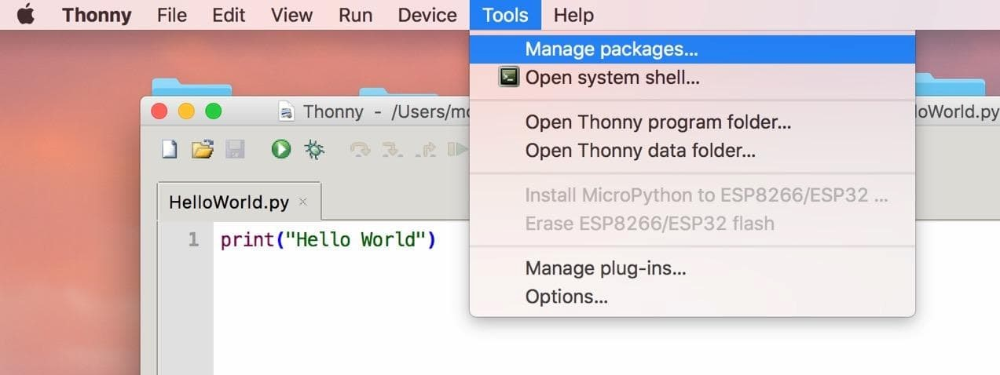
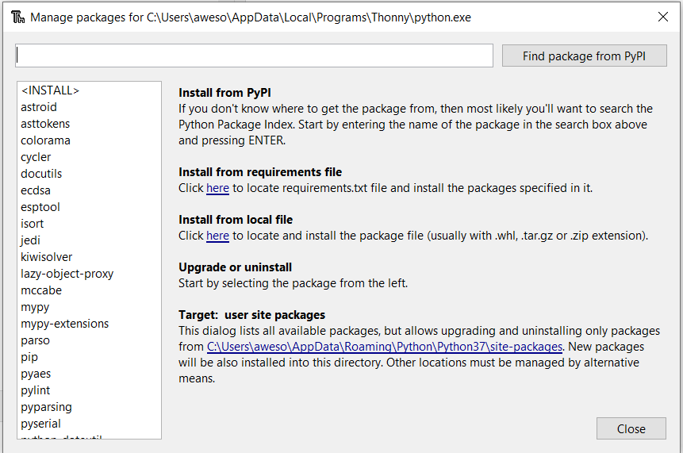
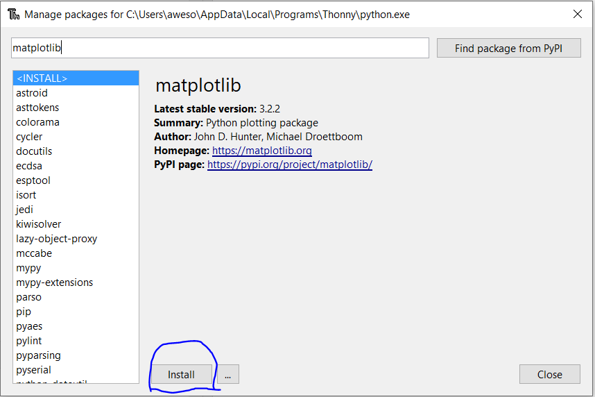
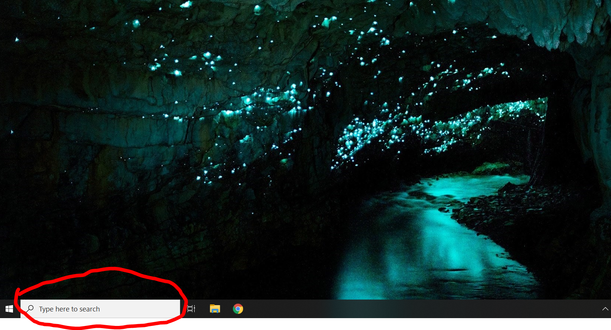
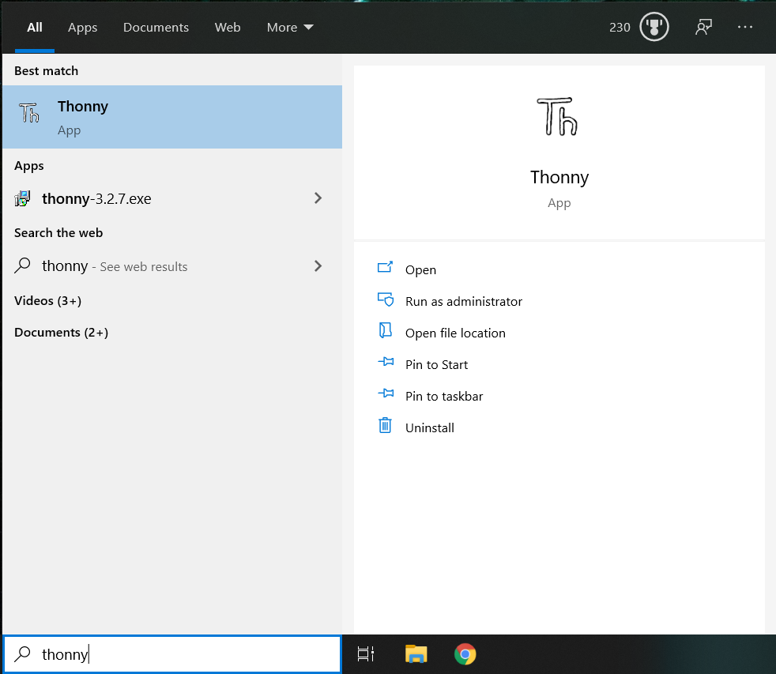
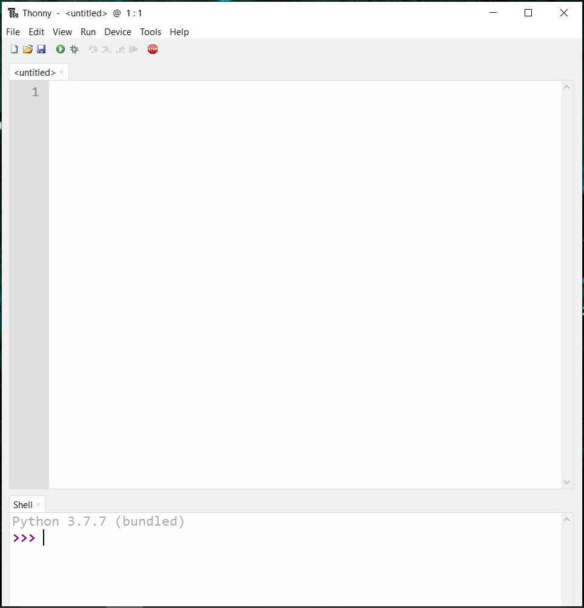
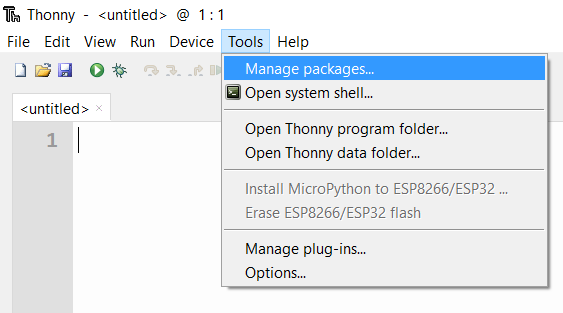

Instructions for typing and running your first program
Objective
We will now have you type, run, and save your first computer program.
- Programs are typed in using your computer’s keyboard, just as you would type in an email or text document.
- And just as the “thing you are typing into” is different for email and for text-editing, there is a different “thing” to type programs into.
- The typing is one part of getting a program. If you just type your program, it will just be sitting there on your computer. But you want to go the next step and run (or, execute, as we say) the program. Typing and not-running is loosely analogous to typing an email but not sending it (the email will just remain in composed-form, but go nowhere) Similarly, typing text into Word doesn’t mean it gets “published”.
- The “thing” into which you type and run your program is called a code editor or an IDE (Integrated Development Environment, a mouthful).
- We are going to give you the option of using one of two code editors, Thonny or Spyder. Think of them as apps that help you type and run programs.
Before we get to typing in a program, we first (if not already done) need to download and install Python and either Thonny or Spyder.
- The term install means: you download software on your computer and get it to run. This is something you do just once.
- When you need to run the software again, you search for it on your computer (since it’s already installed) and merely run it.
- Thus, you will perform Steps 1 and 2 just once for this course.
- And Steps 3 and 4 repeatedly as you write code.
- Also, if you start off with one editor and change your mind, you can come back here to install the other editor and learn how to use it.
1. Install Anaconda: Pick between these two options and click through to follow instructions in installing Anaconda.
Then come back here and proceed with Step 2.
Incidentally, you might be asking: what exactly is Anaconda and what does it have to do with Python other than its name?
- Python is a programming language. Typically a language alone is not enough to get many useful programming tasks done.
- We need additional software that’s useful. Anaconda is a bundle that includes Python and this additional software. You install it once on your computer and you can then avail of all kinds of useful things related to Python.
- The one thing it does not have, sadly, is the Thonny editor, so we’ll show you how to install that.
2. Install a code editor: by selecting ONE of the following options:
- Option A: Thonny for Mac users
- Option B: There are no special instructions because Spyder comes bundled with Anaconda.
- Option A: Thonny for Windows users
- Option B: There are no special instructions because Spyder comes bundled with Anaconda.
3. Open a code editor: Choose between
- Option A: looking for and opening Thonny for Mac users
- Option B: Using Spyder, looking for, and opening Spyder on a Mac is similar to looking for and opening Thonny.
- Option A: looking for and opening Thonny for Windows users
- Option B: looking for and opening Spyder. Looking for, and opening Spyder on Windows is similar to looking for and opening Thonny.
4. Type and Execute helloworld.py: Choose between:
- Option A: Helloworld for Mac users using Thonny
- Option B: Helloworld for Mac users using Spyder
- Option A: Helloworld for Windows users using Thonny
- Option B: Helloworld for Windows users using Spyder
5. Install Matplotlib for Thonny users: What is matplotlib? It’s a plotting package that we’ll use. This comes packaged with Spyder and so, only Thonny users need to download this. Thonny is a nice editor and so Thonny users cheerfully do this additional step in order to use plotting along with Thonny.
- Mac Users: Install matplotlib for Thonny
- Windows Users: Install matplotlib for Thonny
MacOS Users
Step 1: Installing Anaconda
Follow this guide to learn how to install Anaconda
Step 2: Option A, Installing Thonny
Follow this guide to learn how to install Thonny
Step 3: Option A, Opening Thonny
These screenshots explain how to open Thonny:
Step 3.A.1

Step 3.A.2

Step 3.A.3

Step 3.A.4: You now have opened Thonny

- When you open Thonny you aren’t opening program files (yet). It’s similar to opening Word without naming a text file to work on.
- Your program files are going to be in specific folders. You need to look for them, and when you create new ones, save them in specific folders.
Step 4: Option A, Helloworld in Thonny
Step 4: Option B, Helloworld in Spyder
Step 5: Installing Matplotlib (or any package) for Thonny Users
How to add a package (like Matplotlib):
To add a package (which will only be necessary for those using Thonny), first, open Thonny, and go to “Tools”. From there, click on “Manage Packages”. 
Then, you will see a window like what is shown in the image above. Search for the “package” you need to install or remove. In this case, we have used the example of “Matplotlib”, which you will need to have installed for some exercises. Once you’ve typed the name of the package, click “Find package from PyPI” or press the enter/return key. 
To add the package, click the install button. You will then see a small popup while the package is installed. 
Windows Users
Step 1: Installing Anaconda
Follow this guide to learn how to install Anaconda
Step 2: Option A, Installing Thonny
Step 3: Option A, Opening Thonny
The following screenshots explain how to open Thonny:
Step 3.A.1 
Step 3.A.2 
Step 3.A.3 
- When you open Thonny you aren’t opening program files (yet). It’s similar to opening Word without naming a text file to work on.
- Your program files are going to be in specific folders. You need to look for them, and when you create new ones, save them in specific folders.
Step 4: Option A, Helloworld in Thonny
Step 4: Option B: Helloworld in Spyder
Step 5: Installing Matplotlib
How to add a package (like Matplotlib):
To add a package (which will only be necessary for those using Thonny), first, open Thonny, and go to “Tools”. From there, click on “Manage Packages”. 
Then, you will see a window like what is shown in the image above. Search for the “package” you need to install or remove. In this case, we have used the example of “Matplotlib”, which you will need to have installed for some exercises. Once you’ve typed the name of the package, click “Find package from PyPI” or press the enter/return key.
To add the package, click the install button. You will then see a small popup while the package is installed.